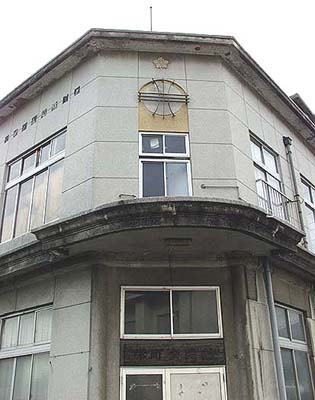

（2003年9月22日撮影） 大牟田川に架かる「泉橋」。大正5年竣工。大牟田市内初のコンクリート橋。そのデザインに 特徴がある。 「山ノ上の医局」と呼ばれていた三井医院への通路として利用 されていた。その影響か、この辺りには薬局店が多く見られる。 かつて大牟田川は、「燃える川」あるいは「七色の虹の川」と呼ばれていた時代があった。その頃の大牟田川は、垂れ流 されていた付近工場廃水の油でギラギラと光り、まさしく虹色であったという。そして時々川の中を火が走り、「燃える川」 としても有名だった。  （2003年9月22日撮影） 旧交番。栄町信号付近の大牟田川沿いに建つ。うすっぺらな今風の交番が多くなった中で、 このような威厳ある交番はもう見られなくなった。現在は栄町公民館として再利用されている。
大牟田川に架かる「泉橋」。大正5年竣工。大牟田市内初のコンクリート橋。そのデザインに 特徴がある。 「山ノ上の医局」と呼ばれていた三井医院への通路として利用 されていた。その影響か、この辺りには薬局店が多く見られる。 かつて大牟田川は、「燃える川」あるいは「七色の虹の川」と呼ばれていた時代があった。その頃の大牟田川は、垂れ流 されていた付近工場廃水の油でギラギラと光り、まさしく虹色であったという。そして時々川の中を火が走り、「燃える川」 としても有名だった。
（2003年9月22日撮影） 旧交番。栄町信号付近の大牟田川沿いに建つ。うすっぺらな今風の交番が多くなった中で、 このような威厳ある交番はもう見られなくなった。現在は栄町公民館として再利用されている。
旧交番。栄町信号付近の大牟田川沿いに建つ。うすっぺらな今風の交番が多くなった中で、 このような威厳ある交番はもう見られなくなった。現在は栄町公民館として再利用されている。